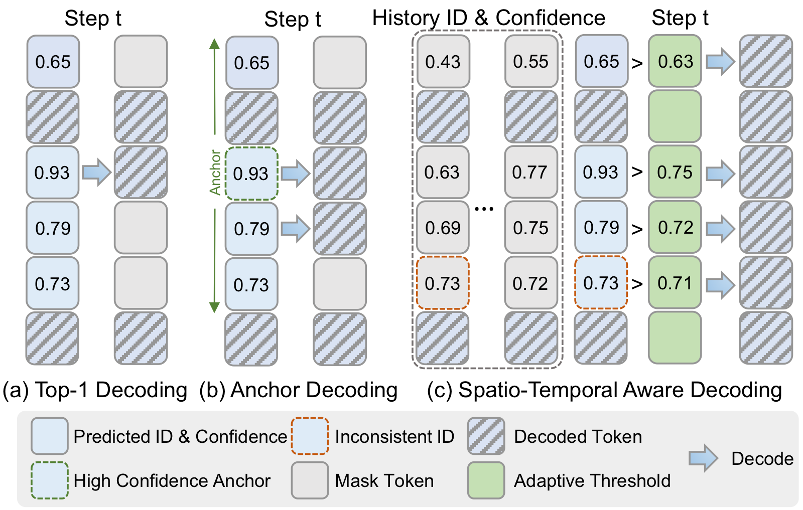
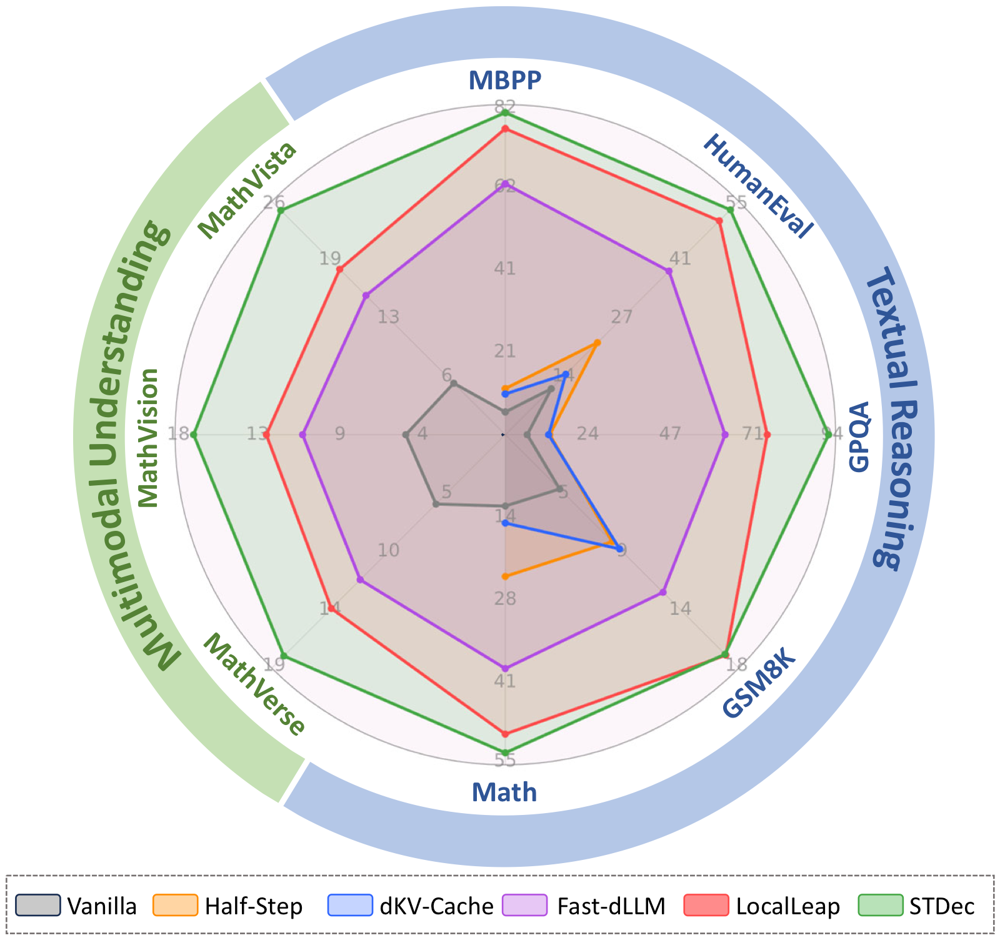
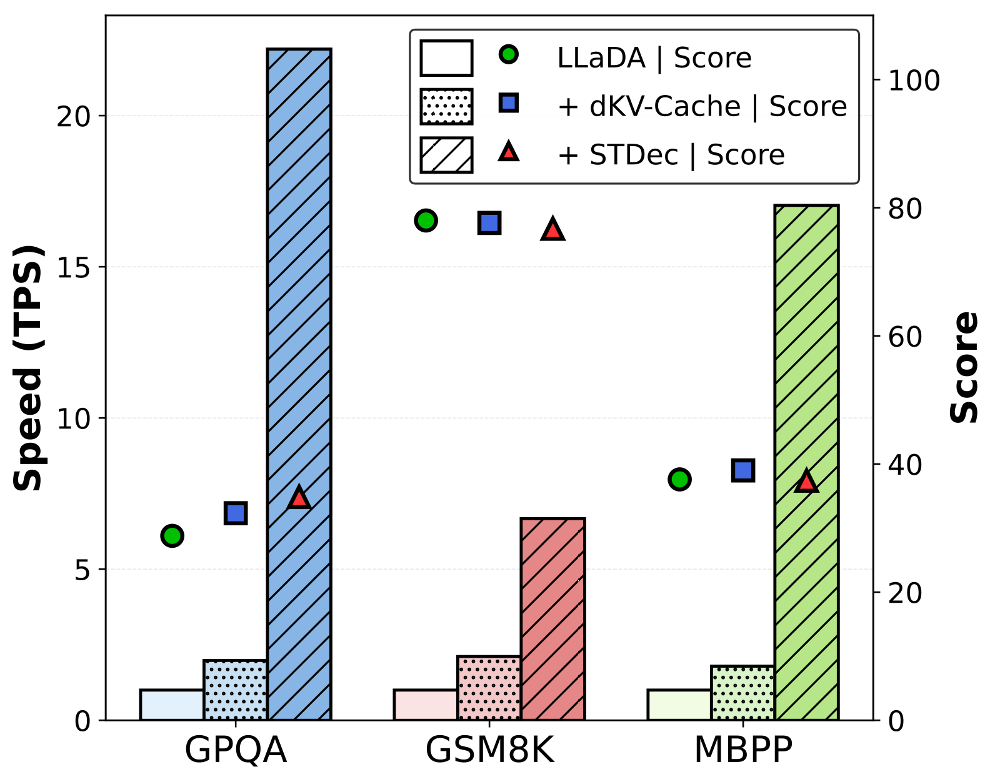
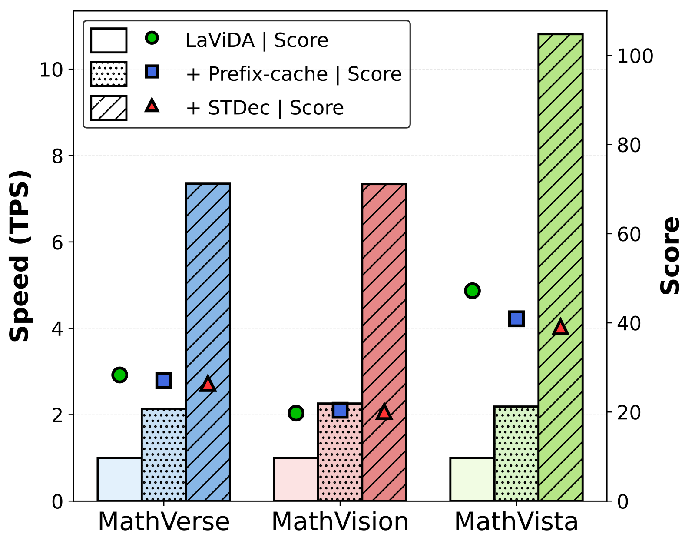
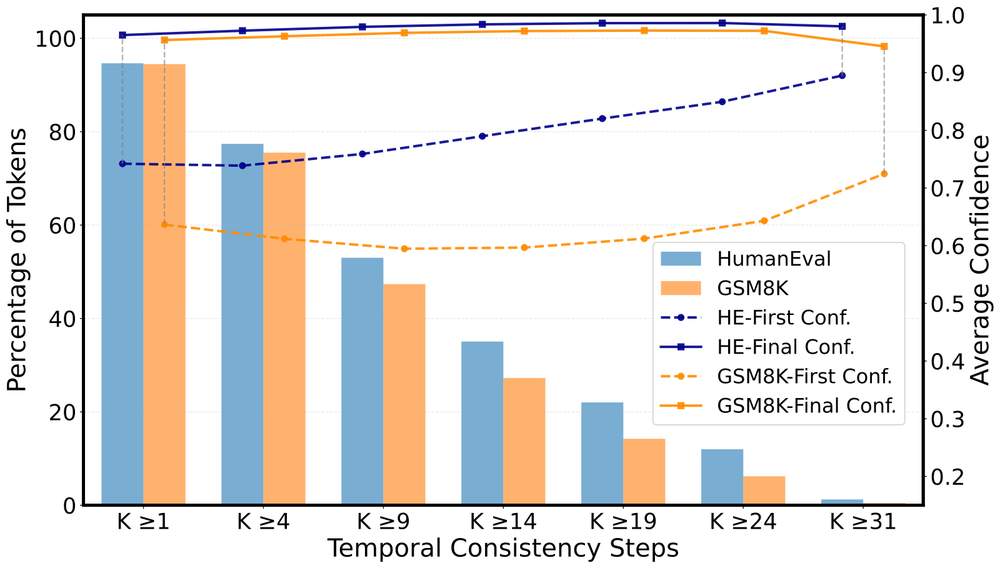
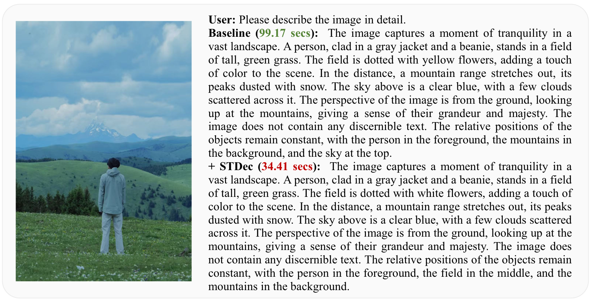

Spatial stability as a decoding prior
Newly decoded tokens usually appear near already decoded neighbors. STDec turns this observation into a token-adaptive threshold map rather than relying on a single global threshold.
ACL 2026 / arXiv Preprint Project Page
1Tianjin University 2Sichuan University 3Chongqing University
STDec is a training-free decoding strategy for diffusion large language models that replaces a single global confidence threshold with token-adaptive thresholds driven by local decoded neighborhoods and cross-step prediction consistency. Across textual reasoning and multimodal understanding benchmarks, it substantially improves throughput while preserving comparable task quality.
Overview
Instead of committing tokens with one global rule, STDec uses the structure that naturally emerges during denoising: decoded regions expand locally, and token identities often stabilize before they are officially committed.
Newly decoded tokens usually appear near already decoded neighbors. STDec turns this observation into a token-adaptive threshold map rather than relying on a single global threshold.
When a token keeps predicting the same ID across denoising steps, STDec relaxes its threshold and decodes stable tokens earlier without retraining the model.
The method plugs into existing dLLM inference pipelines and composes with cache-based accelerators, improving throughput across text and multimodal tasks.
Motivation
Standard top-k or fixed-threshold decoding treats every masked token the same, even though dLLM denoising is highly structured in both space and time.

Figure: Comparison with existing decoding strategies Figure: STDec pipeline overview
Figure: STDec pipeline overview
Method
STDec starts with a threshold map: masked tokens get a high threshold, decoded tokens get a low threshold. A Gaussian smoothing pass then propagates low-threshold influence into nearby masked regions, so positions surrounded by decoded neighbors become easier to commit.
If a token keeps the same predicted ID across consecutive denoising steps, STDec relaxes its threshold with a simple factor. Stable tokens can therefore be decoded earlier while clearly uncertain ones remain conservative.
The final per-token threshold combines the spatial map with temporal relaxation. Tokens are decoded when their confidence exceeds their own adaptive threshold, not a universal one-size rule.
Main Results
STDec improves throughput on Dream, LLaDA, and LaViDa while keeping generation scores broadly comparable. The headline pattern is consistent: better efficiency-quality trade-offs than simple step reduction and stronger throughput than prior decoding accelerators.

Figure: Throughput comparison over eight benchmarks85.63 TPS on average, with standout gains such as 27.86× on GPQA and 13.88× on MBPP.
Reaches 80.47 TPS on MBPP and 92.08 TPS on GPQA, while keeping benchmark scores comparable to the vanilla decoder.
Multimodal understanding throughput rises from 5.57 to 19.86 TPS on average across MathVerse, MathVision, and MathVista.
Headline Numbers
193.62 TPS vs. 6.95 TPS baseline.
80.47 TPS with a score of 38.40.
92.08 TPS while keeping score at 29.29.
24.66 TPS with only a small score change.
Scalability and Compatibility
STDec scales favorably with longer generations and remains complementary to cache-based acceleration. Instead of replacing dKV-Cache or Prefix-DLM, it stacks on top of them for additional gains.

Figure: LLaDA + dKV-Cache composition
Figure: LaViDa + Prefix-DLM compositionOn 1024-token generation with LLaDA-8B-Instruct, STDec improves throughput by 10.96× to 47.80×. The strongest result is GPQA, where throughput rises from 3.53 to 168.73 TPS with the same score.
On LLaDA, STDec stacked with dKV-Cache reaches 22.20× speedup on GPQA and 17.03× on MBPP versus the vanilla baseline. On LaViDa, it consistently adds speed on top of Prefix-DLM with comparable task quality.
Analysis and Ablation
The analysis section of the paper shows why STDec works: currently decoded tokens are often surrounded by already decoded neighbors, and their predicted token IDs frequently stabilize before the final commit step.
 Figure: Decoded tokens usually emerge near decoded
neighbors
Figure: Decoded tokens usually emerge near decoded
neighbors

Figure: Many tokens become ID-stable before decodingOn HumanEval and GSM8K, more than 90% of decoded tokens are near at least one previously decoded neighbor in a small local radius, and a large fraction already maintain the same predicted ID across earlier denoising steps. Those two signals make adaptive thresholding both intuitive and effective.
HumanEval ablations show that the default setting
τ_high = 0.9, τ_low = 0.3,
σ = 1.0, and α = 0.85 offers the best
balance between throughput and score.
Qualitative Case Study
Qualitative examples in the paper show that STDec keeps the final semantic content intact while shortening the time needed to get there.
On LaViDa-Reason, STDec preserves the same key objects and relative relations in the scene description while cutting decoding time from 99.17 seconds to 34.41 seconds, a 2.88× speedup.
On GSM8K examples with Dream and LLaDA, STDec reaches the same final answer and very similar reasoning content, but commits locally stable tokens earlier and finishes several times faster.

Figure: Multimodal case study on LaViDa-ReasonCitation
If you find STDec useful in your work, please consider citing the project.
@article{chen2026stdec,
title={STDec: Spatio-Temporal Stability Guided Decoding for dLLMs},
author={Chen, Yuzhe and Cao, Jiale and Liu, Xuyang and Xie, Jin and Yang, Aiping and Pang, Yanwei},
journal={arXiv preprint},
year={2026}
}